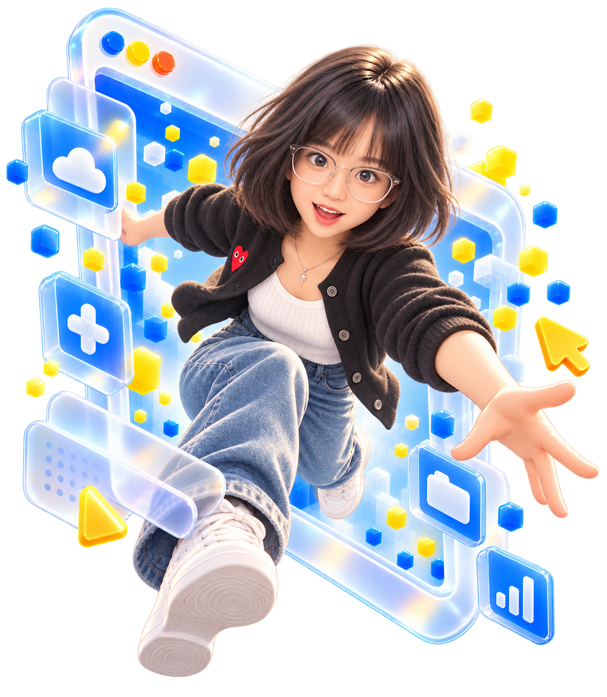

01 / NORMAL工作中光标没有碰到工牌
CREATIVE MIND × DIGITAL CURIOSITY
CHASE
WHAT
EXCITES
YOU.
从屏幕里跳出来，抓住那些闪闪发亮的想法。
把鼠标移到工牌上，或点击它

INTERACTION PREVIEW / 01—02
两种状态，一张工牌。
桌面端悬停翻面 · 移开恢复；触屏点击切换。02 / HOVER比耶！光标悬停在工牌上
01织带印字
PASSION IN MOTION · MOTIVATION
02金属连接
圆环、转轴与卡扣分别成层
03亚克力外壳
透明厚边与蓝色内卡
04像素角色
工作 → 眨眼比耶